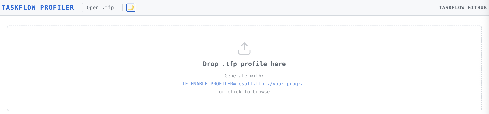
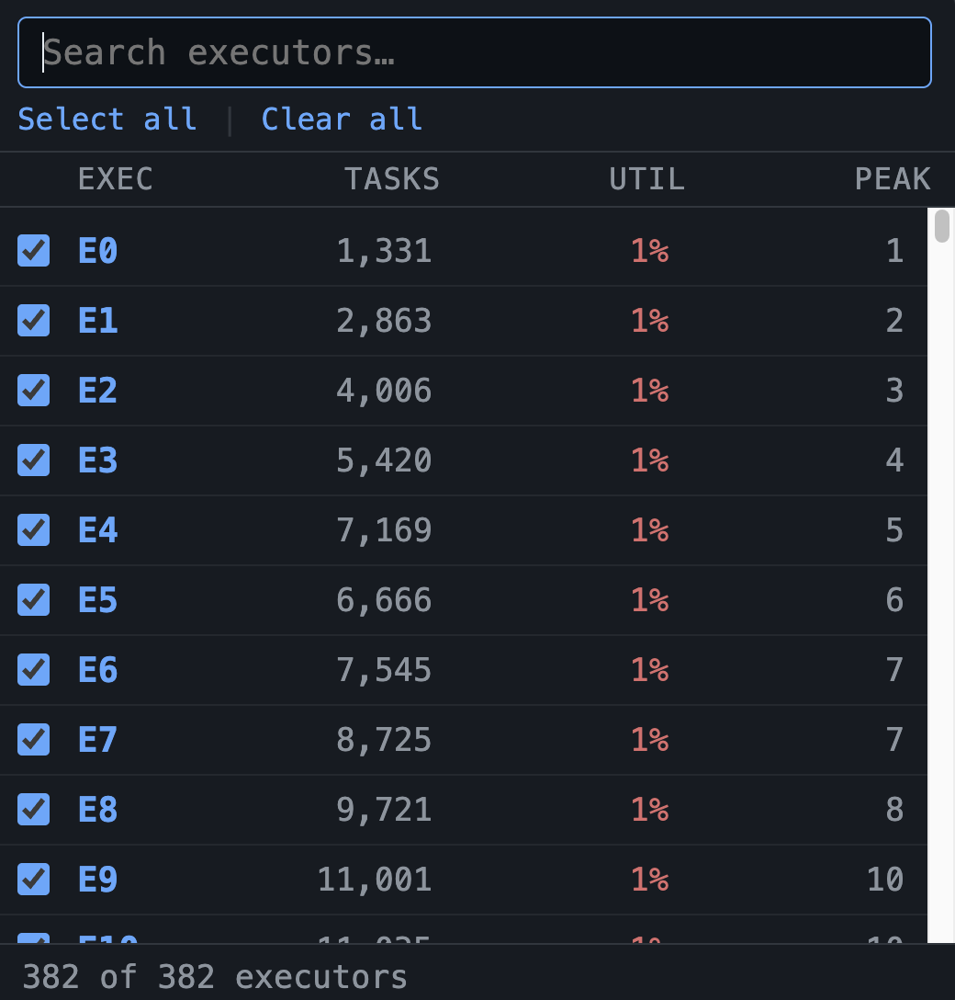
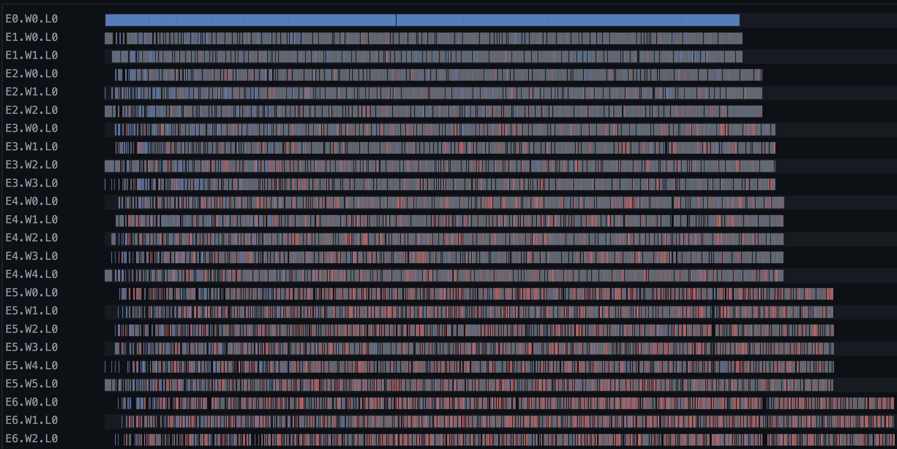
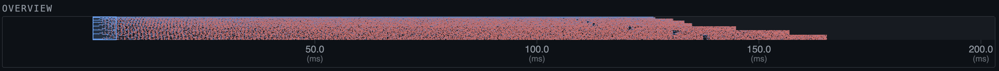
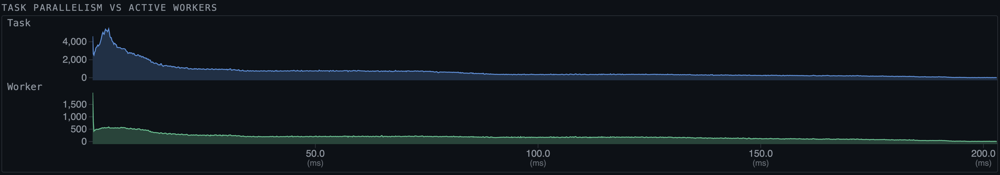
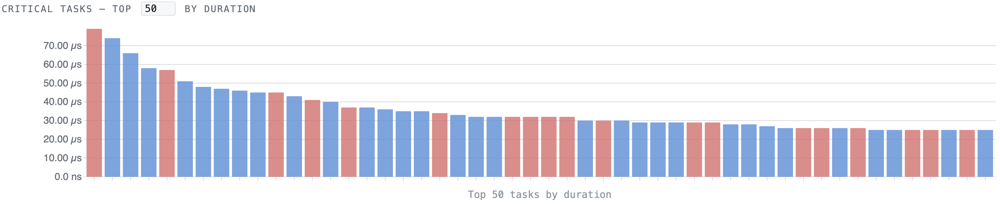
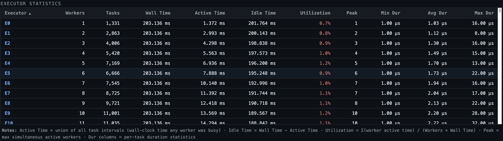
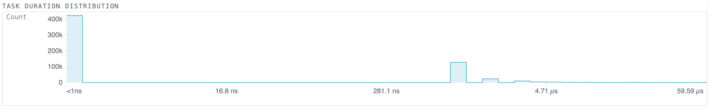

Taskflow comes with a built-in profiler, TFProf, for you to profile and visualize the execution of taskflow programs. TFProf records every task execution across all worker threads in every executor and produces either a compact binary trace file (.tfp) for interactive visualization, or a concise text summary to standard error.
All taskflow programs include a lightweight, always-available profiling module. No recompilation or special build flags are needed. To activate it, set the environment variable TF_ENABLE_PROFILER to the desired output file path before running your program:
When the program finishes, it writes the profiling data to result.tfp in the TFProf binary format (.tfp). If no file path is given (i.e., the variable is set but empty), TFProf prints a concise text summary to standard error instead.
The .tfp file is a compact binary format designed for fast loading and efficient compression. Each segment record stores:
end - beg), also varint-encoded.A file with N executors contains one 12-byte file header followed by N self-contained executor blocks, each with its own string table. This design keeps the format simple and allows each executor block to be decoded independently. In practice, the delta + varint encoding reduces file size by 63–71% compared to a naive fixed-width representation — a 50 MB raw trace typically compresses to 15 MB or less without any external compression library.
Open the TFProf web interface at https://taskflow.github.io/tfprof/ and drop your .tfp file onto the page (or click "Open .tfp"). The interface is a self-contained HTML file with no server, no installation, and no network dependency — it runs entirely in your browser.

The interface is organized into the following panels from top to bottom:
The toolbar at the top shows:
A statistics bar below the toolbar shows live summary values for the currently loaded trace and active zoom window: Workers, Tasks, Wall (total wall-clock duration), Window (current zoom range), and Visible (number of segments visible).

The "Executors: All N ▾" button opens a searchable popover listing every executor in the trace. Each row shows the executor ID alongside live statistics (task count, utilization, peak parallelism) drawn from the current zoom window, so you can immediately spot which executors are most active or most idle. All columns in the popover are sortable by clicking the column header — click once to sort descending, again to reverse. Selecting or deselecting executors instantly updates every panel below.

The execution timeline is the main view. Each row represents one worker level (E<i>.W<j>.L<k> denotes executor i, physical worker j, nesting level k). A physical worker that spawns recursive subflows produces multiple levels; all levels share the same physical thread and are counted as one active worker.
Each colored segment represents a task execution, color-coded by task type:
| Color | Type |
|---|---|
| Blue | Static task |
| Orange | Subflow task |
| Green | Condition task |
| Red/Pink | Async task |
| Gray | Clustered (multiple tasks merged for display) |
When many tasks are too small to render individually at the current zoom level, TFProf merges adjacent tasks into a single clustered segment (shown in gray). Hover over any segment to see a tooltip with the task type, name, worker, duration, and start time. For clustered segments, the tooltip shows the task count and invites you to zoom in to see individual tasks.
Zooming: brush-select any horizontal region to zoom into that window. Double-click anywhere on the timeline to step back to the previous zoom level. The Reset Zoom button returns to the full trace.
The timeline uses virtual scrolling for large traces with thousands of workers — only the rows currently in the viewport are rendered, keeping the interface responsive regardless of worker count.

The Overview panel below the timeline shows the entire trace compressed into a single minimap row per worker. A blue selection rectangle shows the current zoom window. Drag the selection to pan; brush a new region to jump there directly.

This section contains two stacked panels that share the same time axis:
W1 is active at nesting levels L0, L1, and L2 simultaneously, it is counted as one active worker.Both panels zoom together with the main timeline. Brush the Worker panel to zoom, or double-click to step back.

The "Critical Tasks" bar chart ranks the top-N tasks by duration within the current zoom window. The default is top 50; adjust the number with the input field. Bars are color-coded by task type. Hover a bar to see the task details; click it to zoom the timeline to that task's time span (with 50% padding on each side, clamped to the trace bounds).

The "Executor Statistics" table reports per-executor metrics computed over the current zoom window:
| Column | Meaning |
|---|---|
| Executor | Executor ID |
| Workers | Number of distinct physical worker threads |
| Tasks | Total task executions in the window |
| Wall Time | Length of the zoom window |
| Active Time | Union of all task intervals (time at least one worker was busy) |
| Idle Time | Wall Time − Active Time |
| Utilization | Σ(worker active time) / (Workers × Wall Time) |
| Peak | Maximum simultaneously active workers at any instant |
| Min Dur | Shortest individual task duration |
| Avg Dur | Mean task duration |
| Max Dur | Longest individual task duration |
Click any column header to sort ascending or descending (indicated by ▲/▼). Utilization is color-coded: green ≥ 80%, amber 50–80%, red < 50%.
All values update live as you zoom or filter executors.
Notes printed below the table:
W1 runs at L0 and L1 simultaneously, only one unit of worker time is counted per wall-clock instant.
The "Task Duration Distribution" panel shows the shape of the task duration distribution for the active executor selection and zoom window, drawn as a cyan step-line area plot.
The x-axis is the task duration and the y-axis is the task count per bin. TFProf automatically selects linear or logarithmic binning based on two signals:
max/min > 50, the span is wide enough that linear bins would crush nearly all tasks into the leftmost few bins.When both signals are present, log binning is used; otherwise linear binning is applied. Sub-nanosecond durations (below 1 ns = 0.001 µs) are clamped to the first bin; when this occurs the leftmost x-axis tick is labeled <1ns.
To get a quick overview without opening the browser, set TF_ENABLE_PROFILER to an empty string. TFProf will print a text summary to standard error for each executor:
A typical summary looks like this:
The summary has three sections:
Total row aggregates counts and times across all active workers.For programs with millions of tasks the .tfp file can be tens of megabytes. TFProf loads and parses the file entirely in a background browser thread so the page remains responsive during loading. The execution timeline uses virtual scrolling so even traces with thousands of worker rows render smoothly.
Recursive taskflow programs (such as divide-and-conquer or Fibonacci-style graphs) produce many nesting levels per physical worker. The timeline labels these as E<i>.W<j>.L<k> where L<k> is the nesting depth. The Worker panel of the parallelism plot and the Executor Statistics table both deduplicate physical workers — if W1 appears at levels L0 through L5 simultaneously, it counts as one active worker thread.
When a program creates more than one tf::Executor, TFProf records each one as a separate executor block in the .tfp file. Use the Executor Filter to focus on a single executor or compare multiple executors side by side. The Executor Statistics table always shows one row per executor, making it easy to spot load imbalance across executors.
A typical profiling session follows this pattern:
TF_ENABLE_PROFILER=result.tfp.result.tfp onto the page.